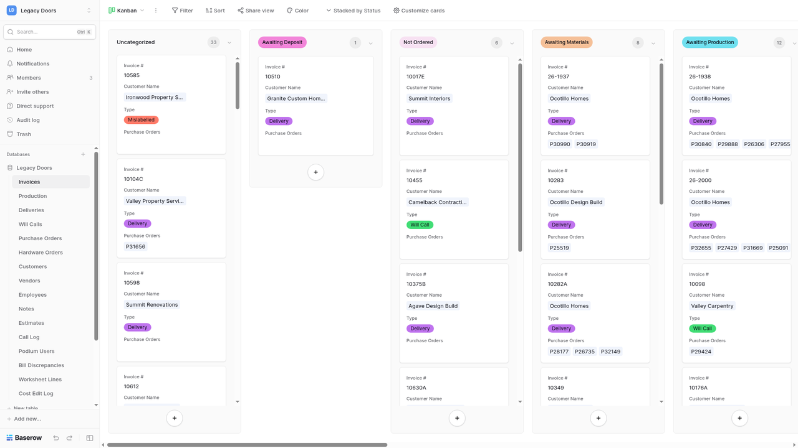

Portfolio
Featured

The ERP I built and ran a distributor on Case study · system retired in 2026
I was General Manager of an 11-person door and trim distributor and built its ERP on Baserow, n8n and QuickBooks Online. It started in August 2022 as a CRM and project tracker. Automation began with n8n in May 2025, and by the end it had 31 tables and 29 workflows. Every employee used it, and three were daily power users. The owner retired it in 2026. From May 2025 to November 2026 its n8n workflows handled about 46,000 business events (QuickBooks changes, order and production updates, incoming calls), plus background checks every five minutes.
Business systems

Bill checker Write-up only
A Python tool that ran every morning: it read about 250 vendor bills a month, entered the ones that reconciled in QuickBooks, and logged every price or quantity difference for me to work through. A local model answered narrow questions, and code checked every answer.
Infrastructure and AI
small-gpu-bench
Tests of real LLM tasks (redaction, document audit, tool selection, judge calibration) on a 4 GB Pascal GPU. The repo has a stdlib-only test harness, a pattern where a checker decides when to escalate, and the source for every number.
prompt-tune
A cloud model rewrites a local model's prompt using only an aggregate report, so it never sees a record of the private data. The repo includes the gateway, the leak tests and the results of the first real runs.
Earlier work (2017-2021)
- Shop.Doormanstan: the store's online catalog and its Lambda, Express and DynamoDB backend. The site closed with the original business. Code: backend, jamb calculator.
- Fair Rentals: a 2017 Chingu project by a 4-person remote team, built with MERN, GraphQL and Auth0. Code
- Google Sheets CRUD: a small library that used Google Sheets as a backend with no login, from when the shop database was a spreadsheet and a nightly script. Code
- Godot games: a hex-grid tactics game in GDScript. Hex-SRPG
- redRouge: my first roguelike, in plain JavaScript and canvas. Code
More on GitHub.